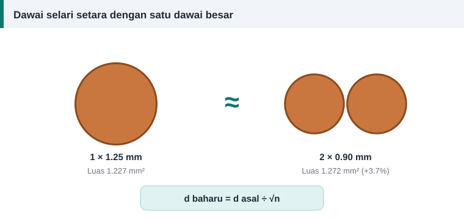

Dawai dan penebat
Menggunakan Dawai Selari Sebagai Ganti Saiz yang Tiada
Katakan belitan asal menggunakan dawai 1.25 mm. Kedai hanya ada 0.90 mm dan 0.63 mm. Perlukah kerja ditangguhkan? Tidak semestinya.


Prinsipnya: luas, bukan diameter
Arus tidak peduli sama ada kuprum itu satu batang tebal atau beberapa batang halus. Yang penting ialah jumlah luas keratan. Beberapa dawai yang dililit bersama-sama dan disambung pada kedua-dua hujung berkelakuan seperti satu konduktor.
d setiap lembar = d asal ÷ √n
Di sini n ialah bilangan lembar. Untuk dua lembar, bahagi dengan 1.414. Untuk tiga lembar, 1.732. Untuk empat lembar, 2.
Contoh: mengganti 1.25 mm
| Bilangan lembar | Diameter tepat (mm) | Saiz piawai (mm) | Jumlah luas (mm²) | Beza luas |
|---|---|---|---|---|
| 1 | 1.250 | 1.25 | 1.227 | 0% |
| 2 | 0.884 | 0.90 | 1.272 | +3.7% |
| 3 | 0.722 | 0.71 | 1.188 | −3.2% |
| 4 | 0.625 | 0.63 | 1.247 | +1.6% |
| 5 | 0.559 | 0.56 | 1.232 | +0.4% |
Jadi 2 × 0.90 mm atau 4 × 0.63 mm kedua-duanya boleh digunakan. Gabungan 3 × 0.71 mm kurang 3.2% kuprum, jadi elakkan jika ada pilihan lain.
Gabungan dua saiz berlainan
Lembar tidak semestinya sama saiz. Satu dawai 1.06 mm bersama satu dawai 0.67 mm memberi 0.882 + 0.353 = 1.235 mm², hanya 0.6% lebih daripada 1.227 mm². Arus terbahagi mengikut luas masing-masing kerana kedua-dua lembar sama panjang.
Berapa lembar yang sesuai
- Lebih sedikit lebih baik. Panduan amalan baik EASA/AEMT menyarankan konduktor daripada dawai yang lebih sedikit tetapi lebih besar.
- Setiap lembar tambahan membawa lapisan enamelnya sendiri, jadi ruang untuk kuprum berkurang sedikit.
- Sebaliknya, dawai yang sangat tebal sukar dibengkokkan ke dalam alur kecil. Membahagikannya kepada dua memudahkan kerja.
Cara melilit dawai selari
- Pasang setiap gelendong pada pemegang dan penegang berasingan.
- Tarik semua lembar serentak ke atas acuan. Satu pusingan acuan ialah satu lilitan, tanpa mengira bilangan lembar.
- Pastikan lembar tidak berpintal berlebihan.
- Pada setiap sambungan, bersihkan enamel dan pateri semua lembar bersama.
Jangan keliru dengan laluan selari
Dawai selari tidak sama dengan laluan selari dalam sambungan belitan. Dawai selari tidak mengubah bilangan lilitan. Laluan selari mengubahnya: dua laluan selari memerlukan dua kali ganda lilitan setiap gegelung, dengan dawai separuh luas.
Kira gabungan
Tab "Dawai setara" pada kalkulator menyenaraikan saiz piawai untuk satu hingga enam lembar bersama peratus beza luasnya. Semak juga faktor isian alur selepas menukar gabungan.
Rujukan dan bacaan lanjut
Artikel berkaitan
Memilih Saiz Dawai Belitan: Ketumpatan Arus dan Luas Keratan
Dawai terlalu halus cepat panas, dawai terlalu tebal tidak muat dalam alur. Ketumpatan arus membantu memilih luas keratan kuprum yang seimbang untuk setiap motor.
Jadual Saiz Dawai SWG, AWG dan Milimeter untuk Lilitan Motor
Jadual rujukan pantas menukar nombor tolok SWG dan AWG kepada diameter milimeter, luas keratan dan saiz metrik terdekat bagi dawai kuprum berenamel untuk lilitan motor.
Faktor Isian Alur: Berapa Banyak Dawai Boleh Masuk
Pengiraan memberi bilangan lilitan dan saiz dawai, tetapi alur yang menentukan sama ada semuanya muat. Faktor isian ialah semakan terakhir sebelum mula melilit gegelung.